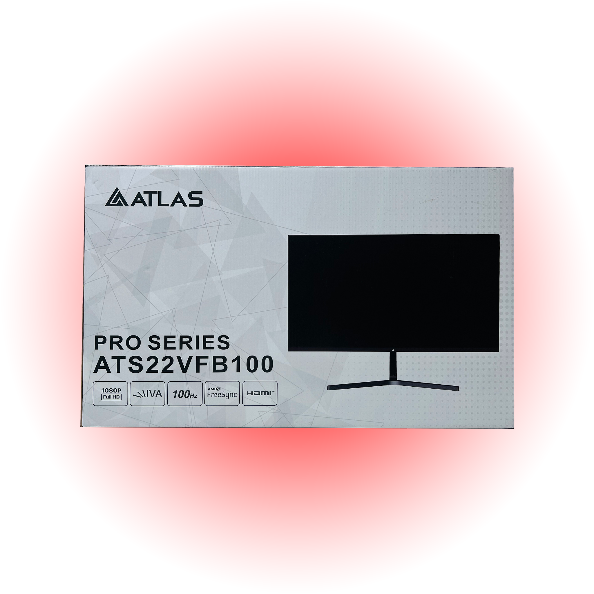
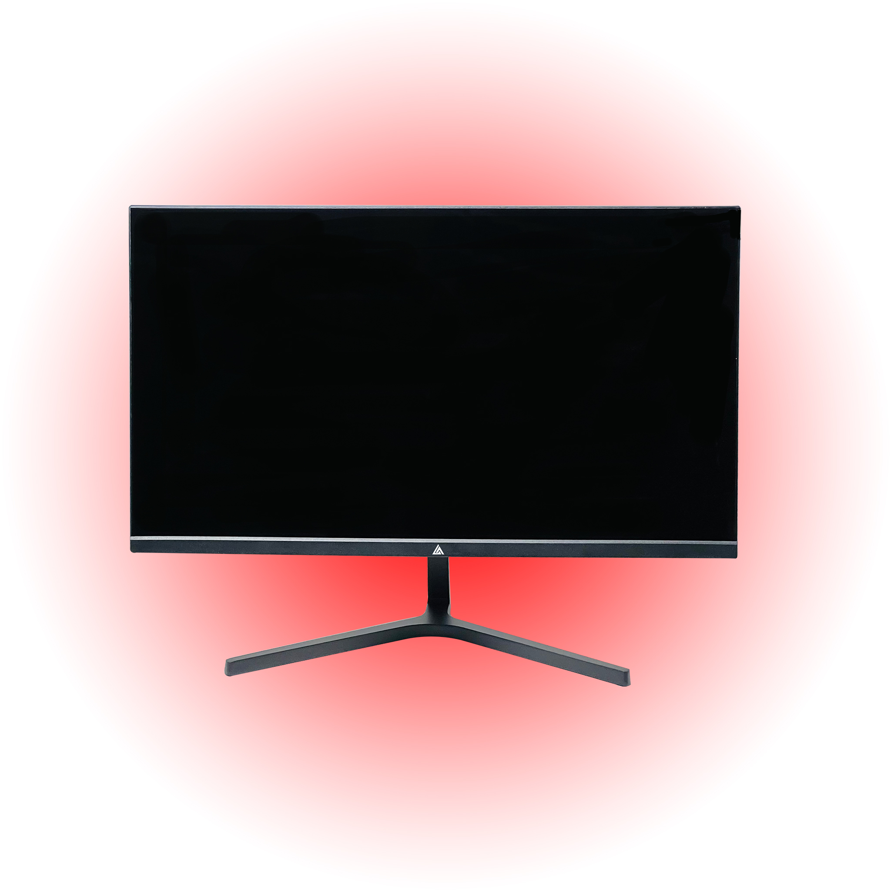
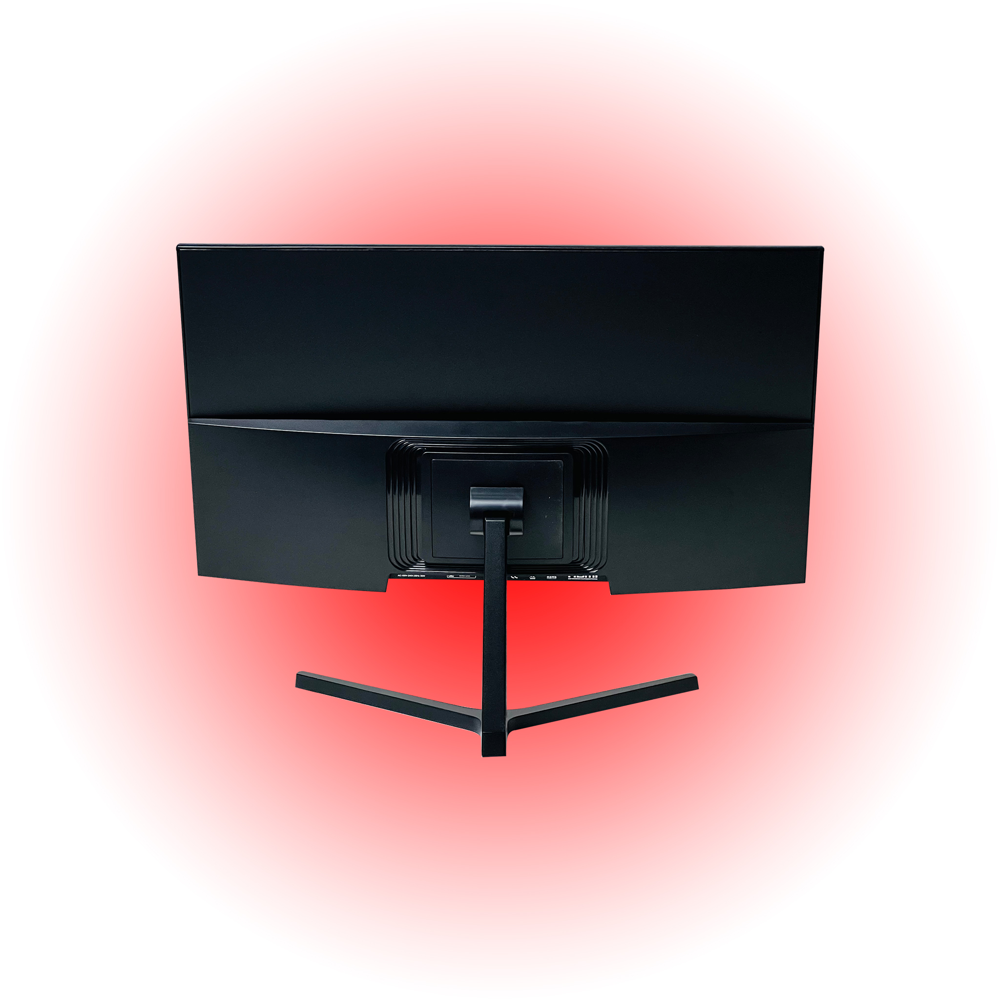

Monitor Series
ATLAS ATS22VFB100 22 Inch Full HD 100Hz Monitor for Editors & Pros
Full HD Display - 22-inch screen with a 1920x1080 resolution for sharp, detailed visuals

Built for real-world performance.
Full HD Display - 22-inch screen with a 1920x1080 resolution for sharp, detailed visuals. 100Hz Refresh Rate - Smooth motion and reduced blur, perfect for gaming and fast-moving content. Wide Viewing Angles - 178 horizontal and vertical viewing angles for consistent image quality from all sides. Multiple Connectivity Options - Includes 1x HDMI and 1x VGA ports for versatile device connections. 3-Year Warranty - Ensures reliable performance and peace of mind with extended protection.
Full HD Display
22-inch screen with a 1920x1080 resolution for sharp, detailed visuals
100Hz Refresh Rate
Smooth motion and reduced blur, perfect for gaming and fast-moving content
Wide Viewing Angles
178 horizontal and vertical viewing angles for consistent image quality from all sides


Full HD Display
- 22-inch screen with a 1920x1080 resolution for sharp, detailed visuals
100Hz Refresh Rate
- Smooth motion and reduced blur, perfect for gaming and fast-moving content
Wide Viewing Angles
- 178 horizontal and vertical viewing angles for consistent image quality from all sides
Multiple Connectivity Options
- Includes 1x HDMI and 1x VGA ports for versatile device connections
| Feature | Details |
|---|---|
| SKU | ATS22VFB100 |
| Category | Monitor |
| Availability | In stock |
| Full HD Display | 22-inch screen with a 1920x1080 resolution for sharp, detailed visuals |
| 100Hz Refresh Rate | Smooth motion and reduced blur, perfect for gaming and fast-moving content |
| Wide Viewing Angles | 178 horizontal and vertical viewing angles for consistent image quality from all sides |
| Multiple Connectivity Options | Includes 1x HDMI and 1x VGA ports for versatile device connections |
| 3-Year Warranty | Ensures reliable performance and peace of mind with extended protection |